| # | |
| 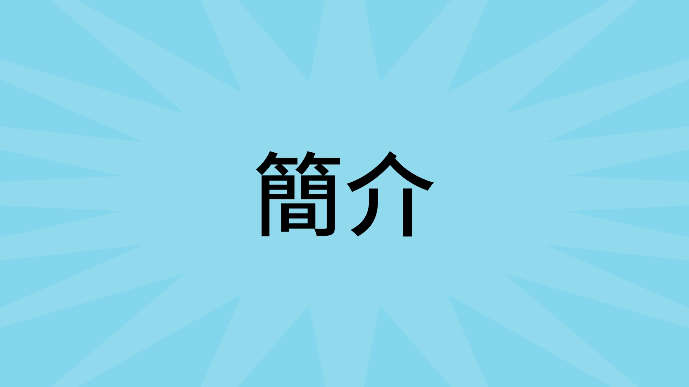 | 嘿 # |
| 我是 Dan McKinley。這是我在坑裡的照片，這是某種暗喻。 # | |
| 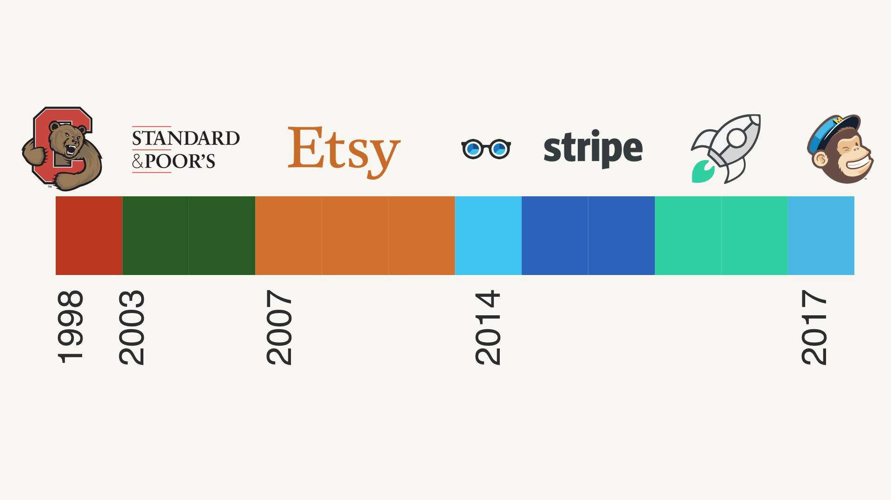 | 我現在在 Mailchimp 工作，如果你有聽 Podcast 可能會叫它 Mailkimp。我以前是 Etsy 的早期員工，我的觀念在那裡慢慢成形，所以我會提到很多在那發生的事。但我也在其他很多地方工作過。 # |
|
我在大公司工作過、也在小公司工作過、還有我自己的小創業。過程中我注意到一些事。
大公司可以為自己的工程方法貼牌。像是「Etsy 的工程方法」成為了某種獨自的東西。活在裡面你的需求會被滿足、也有人會回答你的問題，有時會寵壞人。 但我也遇過所謂的「工程方法」就只是一直在找出路，或是一直身處過渡期中。在這些時刻我想過幾個問題。 # |
|
| 首先，你要如何選用技術來完成工作？ # | |
| 另一個我關心的問題是：「要怎麼讓開發者快樂？」我是開發者，覺得這個問題很重要。如果可以的話我希望快樂地工作。 # | |
|
如果你去找開發者問：「嘿，怎樣你會比較快樂？」，通常會得到很特定的答案。像是：「如我能在上班的時候寫 Clojure 就好了，你該讓我在工作時用 Clojure 寫程式。」我不會無視他們說的話，他們真的在描述某種大腦充滿腦內啡的體驗。
可是我會懷疑他們描述的，是不是真的在心智的最佳狀態。 # |
|
| 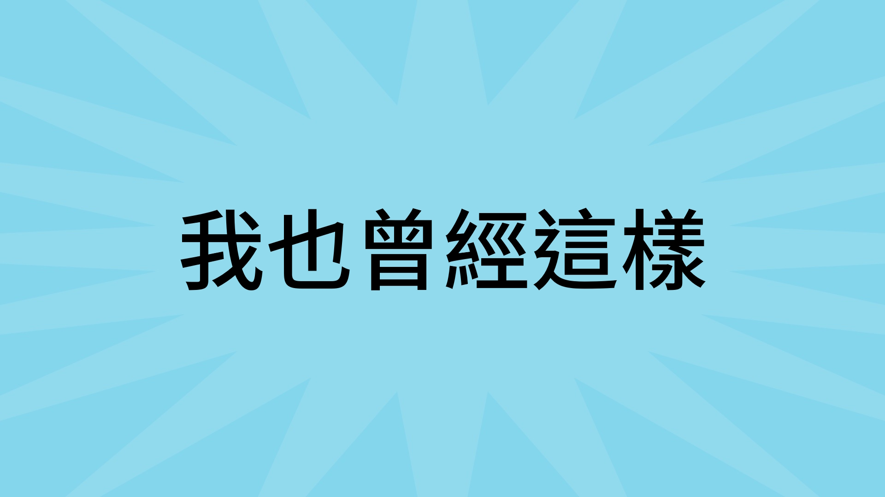 | 但我也曾經是這樣。 # |
| 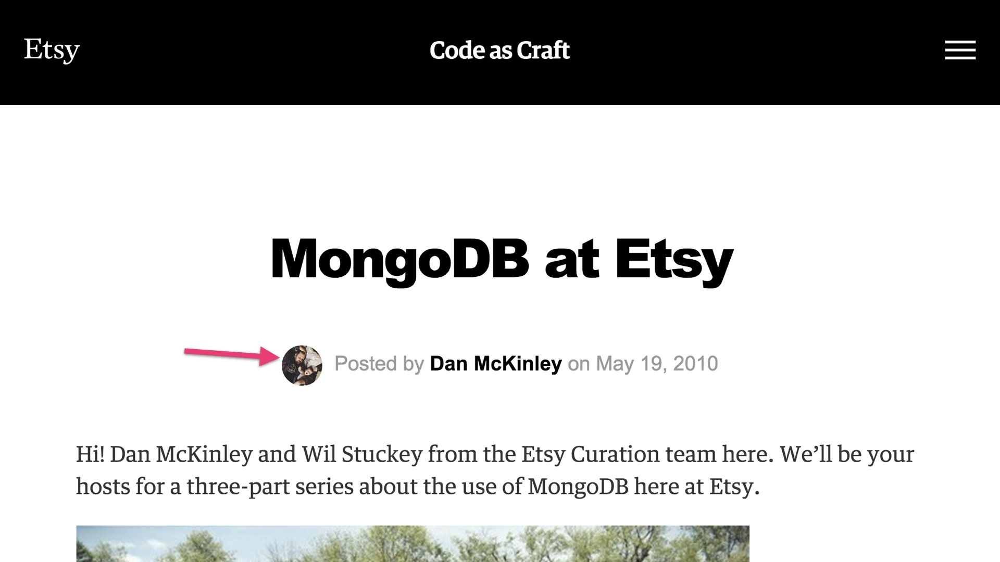 |
以 Etsy 為例，早期他是大一坨 PHP。是某個得邊寫邊學 PHP 的可憐人的作品。
有好幾年的時間我都在逃避它。直到某一天我嘗試用 Scala 服務跟 MongoDB 來取而代之。我那時以為會改善 Infrastructure、解決我所有生產力問題、然後讓我快樂。但最後事與願違。 那段時期產出的破爛現在還在網路上運行，你可以去找看看然後來笑我。現職的 Etsy 員工不時會臭我，而這完全合情合理。 # |
| 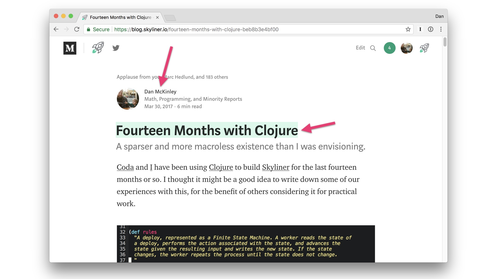 |
當我最後自行創業時，我選用了 Clojure。雖然我覺得 Clojure 不是罪魁禍首，但那個創業公司早就消失了。
我提這些故事是想說我不是一個反對任何新技術的人。也不是從來沒有體驗過寫 Functional programming 的樂趣的人。 你不需要 @ 我來跟我爭論 Scala 還是 Haskell。也不需要覺得像是被人身攻擊需要反擊，我都沒有提到你還是那些語言啊，Steve。 # |
| 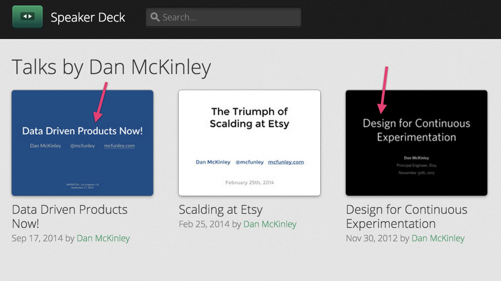 | 即使講了這麼多，我大體上依然不是很執著於工具的工程師。我其他的演講也很少提到軟體工程。 # |
| 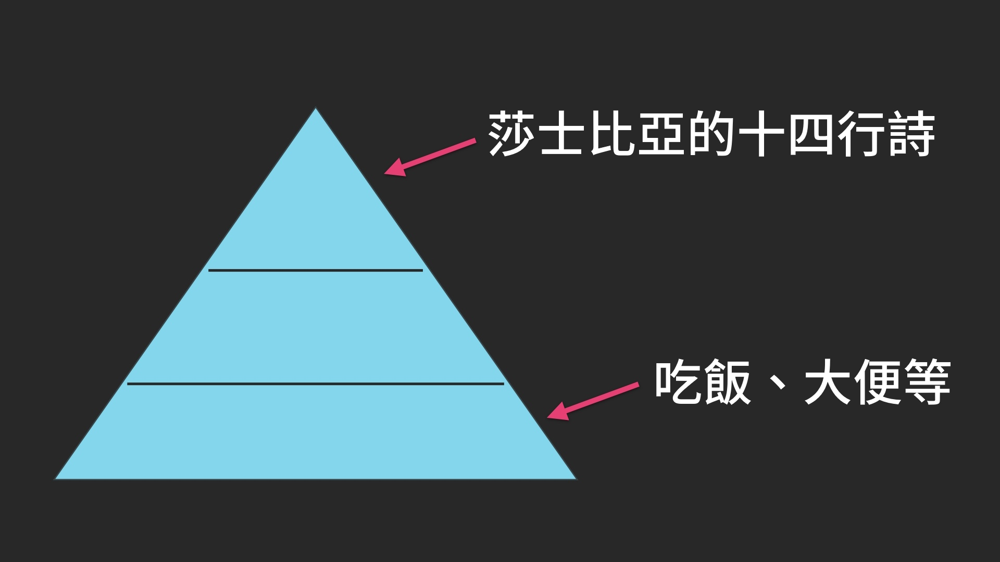 |
我覺得不是因為老了變得易怒才會這樣想。雖然我真的又老又愛生氣，但我覺得有這觀點是因為在過去某個時間點，我登上了馬斯洛需求層次三角的頂點。
馬斯洛需求層次，簡單來說是你得先滿足個人基礎需求，才有可能追求更高層的心智實現。你沒辦法在擔心下一餐沒著落的時候寫出詩來。 # |
| 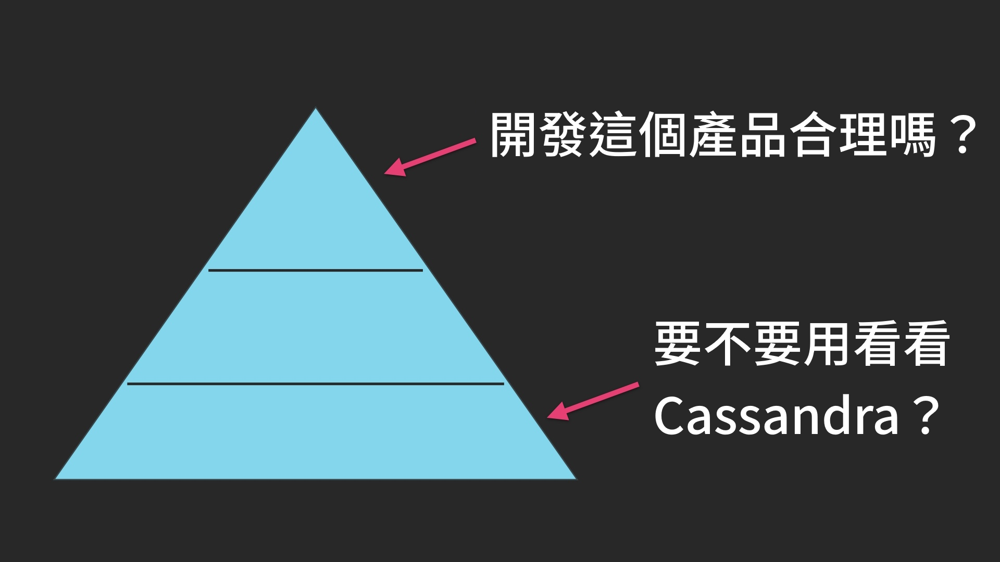 |
我們可以看看 Siegfried Sassoon 的故事，想想詩歌創作是不是這樣。但我覺得軟體工程應該是這樣。在你忙著爭論用什麼資料庫或是警報系統時，是沒有辦法明智地討論產品的走向的。
我有幸待過基礎需求都有被滿足的情況。也想幫助其他人到達那種狀態。 # |
|
要達到那種狀態最重要的一點是理解人的注意力很寶貴。
人類處理細節的能力是有限的。 # |
|
| 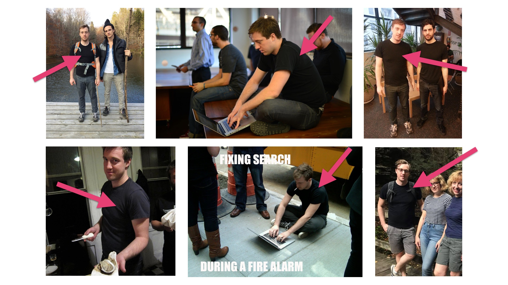 |
我朋友 Andrew 每天都穿同樣牌子的黑色襯衫。他覺得不用挑要穿什麼可以節約他的腦力，省下來的可以用在其他事上。
我不知道以時尚角度來看是否合理，但我覺得有某些道理在。 # |
| 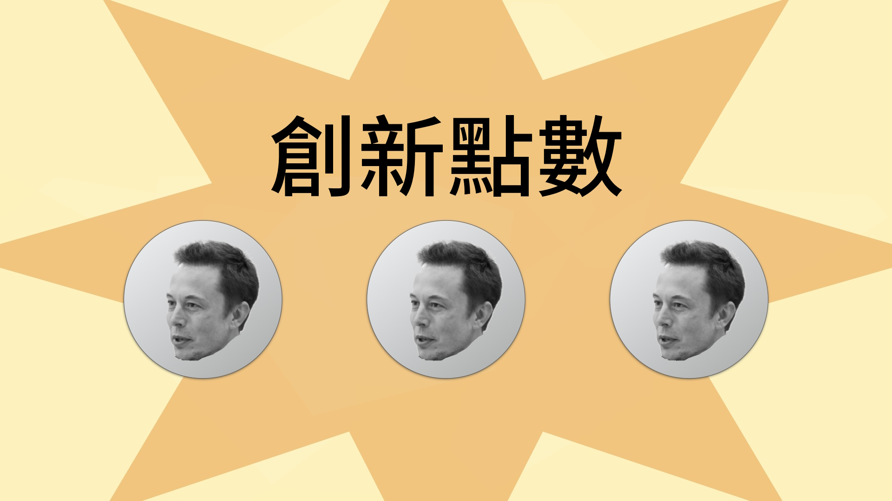 |
我喜歡這樣來思考。咱們假設我們只有有限的創新點數（Innovation token）可以花費。這個點數是我虛構出來的東西，然後我下週要 ICO 這玩意兒。
它代表我們對需要創意、詭異的、或是困難的事物的有限處理能力。我們真的沒有多少點數好花。在公司草創期，可能大概就只有三個點數，不會多太多。 # |
| 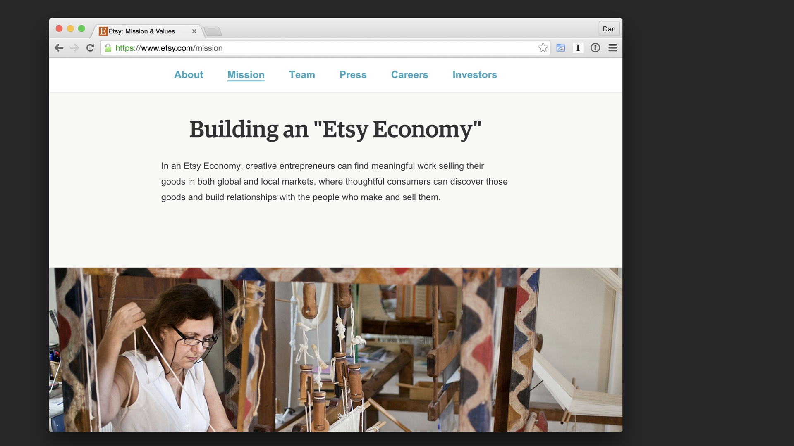 |
所以你的公司想做什麼？我前東家 Etsy 說過想要重塑全世界的經濟。
我現在不知道要多嚴肅地去看待公司宣稱的使命，開始覺得我們不該當它一回事。 但先假設我們是天真如菜鳥，想想如果真的要達到這目的要怎麼做。 # |
| 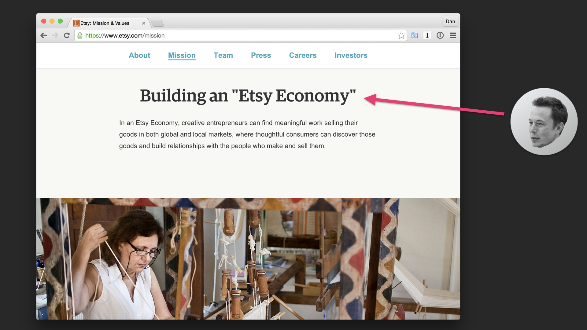 | 重塑全世界的經濟聽起來像個大工程，大概至少會吃掉你一個創新點數。 # |
| 我在 Etsy 之後的東家試圖要：「增加網際網路的 GDP」。 # | |
| 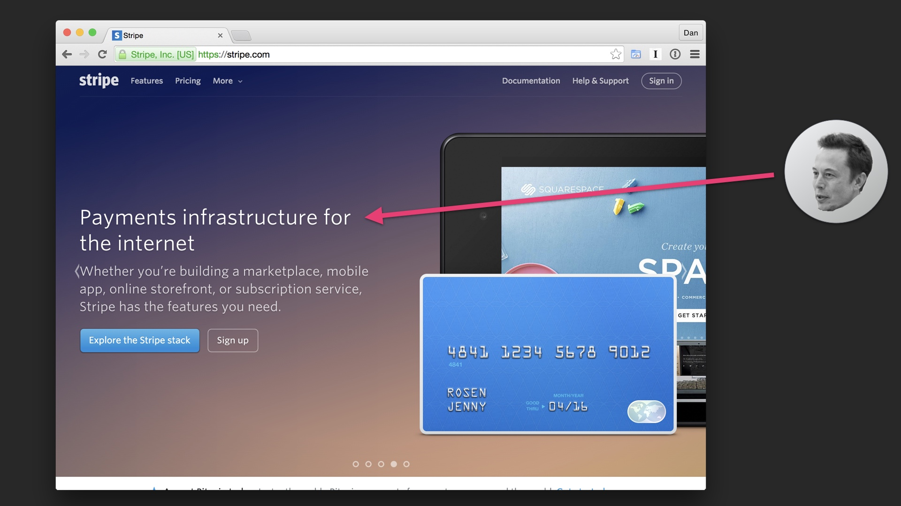 | 這聽起來也是個非常複雜的任務。也許我們該花一個創新點數、甚至兩個、也許要三個 All-in。 # |
| 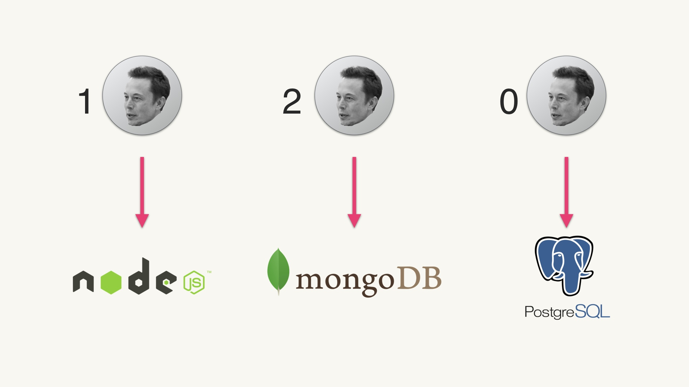 |
如果你把創新當成是種稀缺的資源，那麼把創新的精力放在資料庫還是程式範式上就不太有道理了。
我不是說新東西動不起來。當然他們動得起來，也有許多成功運作的案例。 但是存在已久的軟體通常比剛出爐的更不需要心力照顧。 # |
| 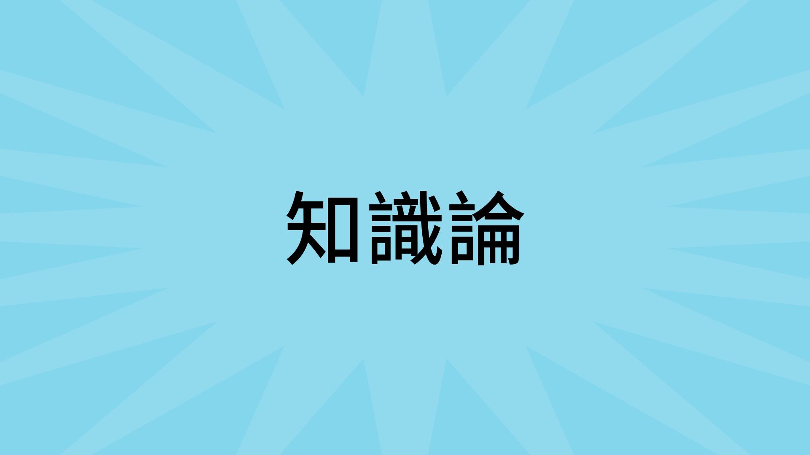 | 要解釋原因，我想談一下有關知識的哲學。我們對某項技術能有多少了解？這很重要，不是無聊的問題。 # |
| 我討厭 Donald Rumsfeld，希望他下油鍋。但他跟接下來要講的理論息息相關，所以我覺得有必要提他有多壞，讓我跟他保持點距離。 # | |
| 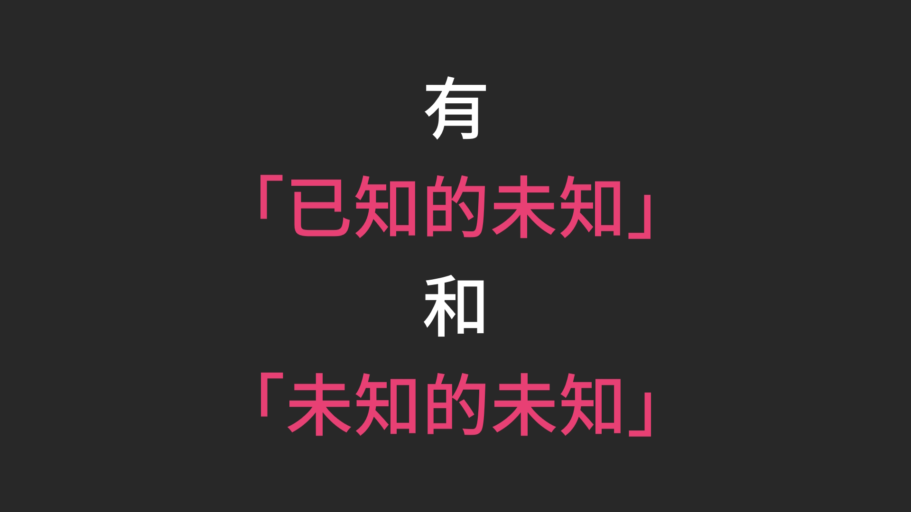 |
當我們不知道某件事物，實際上分為兩種知識的缺乏。
有「已知的未知」，我們知道我們不知道的東西。跟「未知的未知」，我們連「不知道」本身都不知道的東西。 # |
| 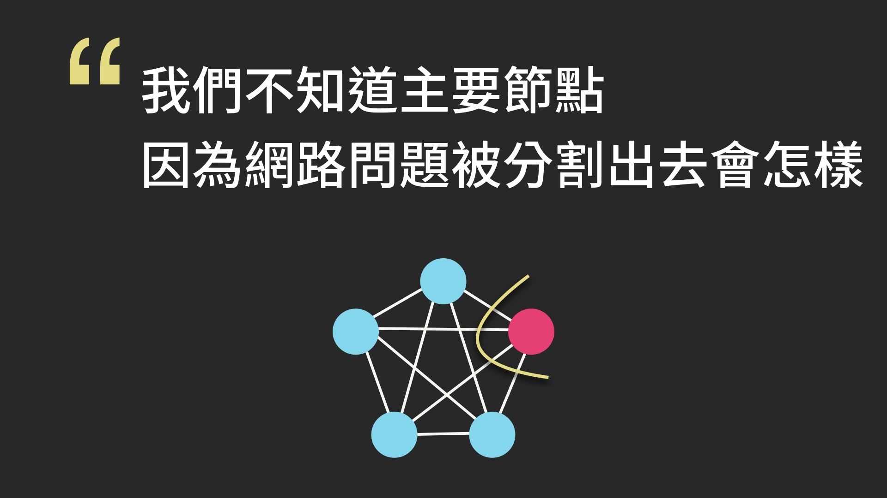 | 在技術上同理。舉個已知的未知例子，對於某個資料庫我們可能不知道它在網路分割（Network partition）時會有什麼行為。但我們知道網路分割是有可能發生的。因為我們知道可能發生這個問題，可以動手去做測試，或是雙手合十祈禱不會發生這種情況。總之我們知道有這種可能性存在。 # |
| 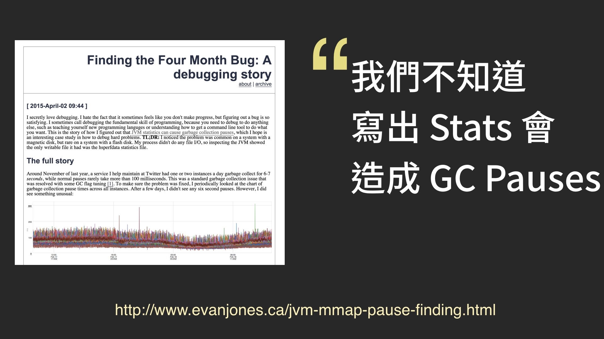 |
技術也有未知的未知。這是我過去看到的某個案例。這個人花了四個月試圖找出 GC pauses 的原因，結果是因為把 Stats 寫檔造成的。他完全不知道這樣會有問題，但問題就是蹦出來了。
許多軟體的 Bug 都像這樣。我們根本不知道它的存在，也不知道要往哪邊注意。這就是未知的未知。 # |
| 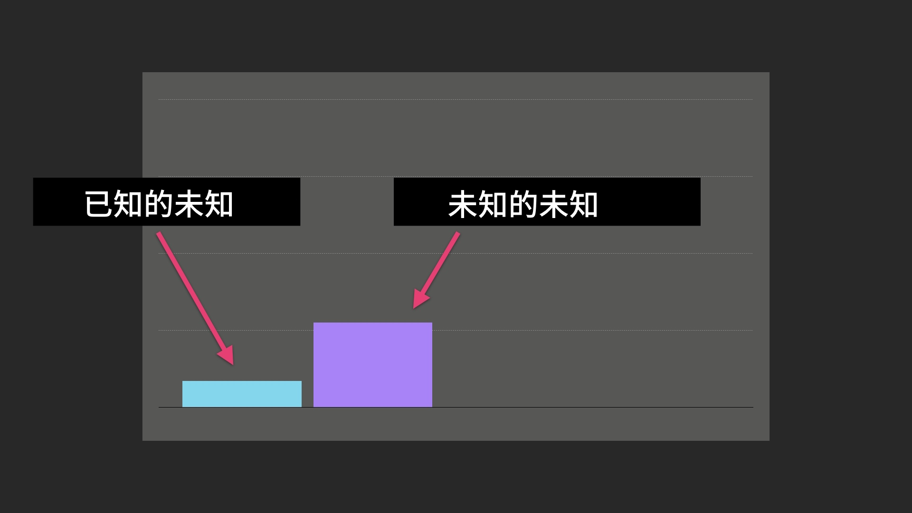 | 重要的是所有軟體都有這兩種未知。用了十幾年的軟體應該會有個 JIRA 伺服器裡面放滿 Ticket 寫著什麼東西壞了，但沒人要修。然後還有至今仍沒有人見過的 Bug，即使這軟體已經被眾人使用了許久。 # |
| 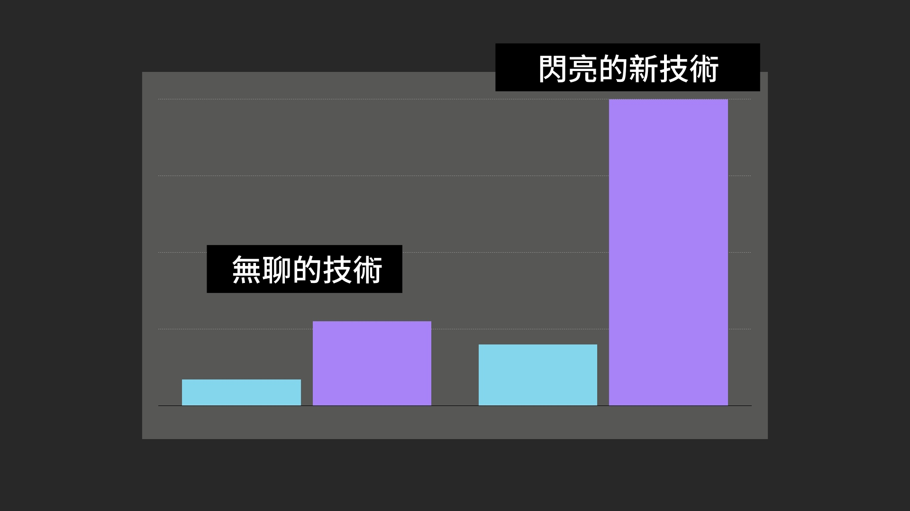 |
但這不代表說所有技術都一樣。新技術這兩者基數都比較高。
新技術已知的未知較多，然後未知的未知多更多。這個差異很重要。 # |
|
我用「選擇無聊的技術」這個簡單、SEO-friendly 的句子當作標題，現在我有些後悔。它有點誤導人。人們會想：「無聊聽起來蠻爛的，為什麼他說是好事？」之類的，情況變得很糟。
但我說的「無聊的技術」不是像看 C-SPAN 電視台那種無聊，我指的無聊是已經被充分了解的事物。他可能爛，但你知道爛在哪裡。你能明確列出它可能讓你失望的地方。 # |
|
| 所以你的意思是資料庫就選 Postgres 就對了，是嗎？嗯，錯了。不幸的是你選擇出來的組合也有關係。 # | |
| 假設你已經選擇了這個 Stack，有 Python、Memcached、MySQL、跟 Apache。 # | |
| 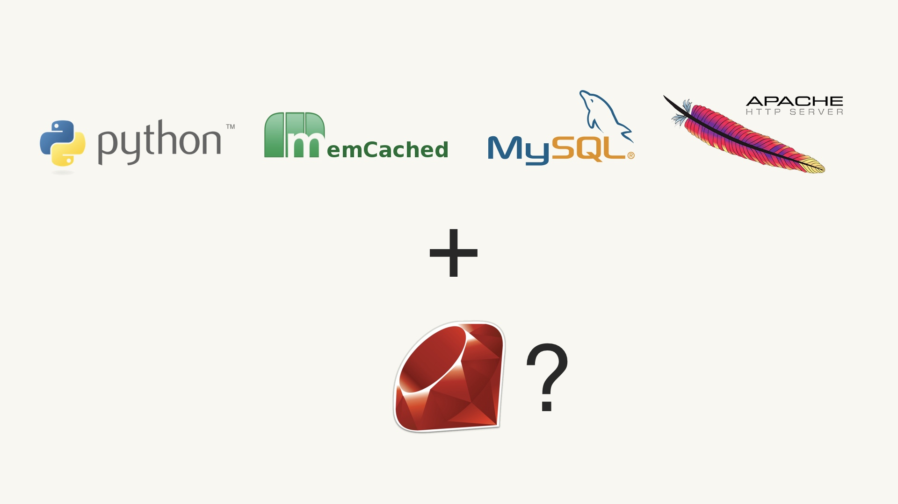 | 現在有個新問題要解決。你覺得把 Ruby 加入現有的 Stack 合理嗎？ # |
| 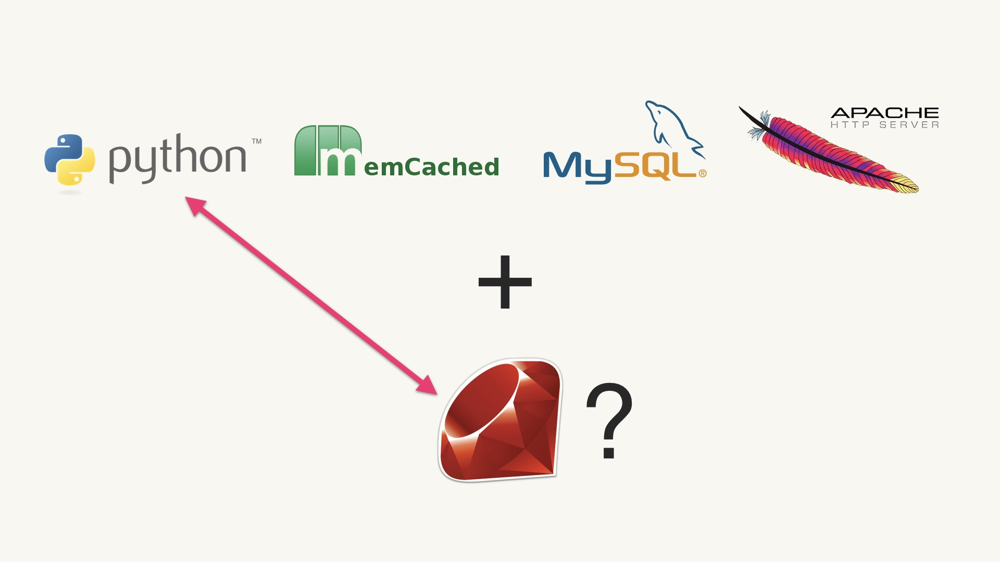 |
幾乎每個有經驗的人回答大概都是：「呃，天呀，不好吧。」
我們知道加入 Ruby 的邊際效益不可能抵過它帶來的複雜度成長。Ruby 跟 Python 基本上角色重複了。 # |
| 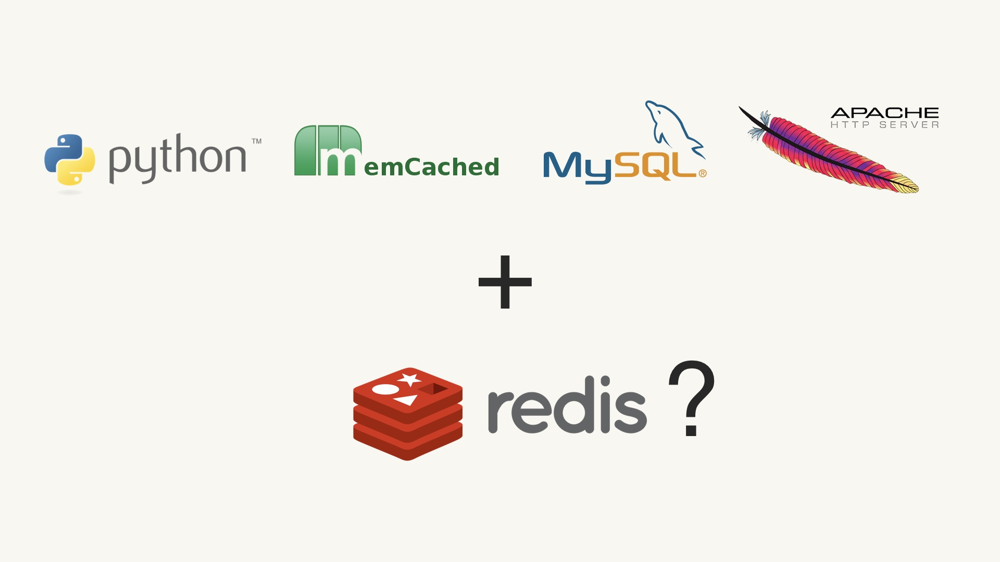 | 好，那 Redis 呢？我們已經有 MySQL 跟 Memcached，還要加 Redis 進來嗎？ # |
|
在我的經驗裡，這種情況就會開始變得混亂。人們開始起邱，鼓吹要當多語言開發者。想加入新的資料庫的人像是一群要衝進巴士底監獄的革命分子。喊著：「你不能阻止我們用最好的工具來開發！」
當人們屈服於這種躁動的本能，他們會說這是給開發者「自由」來圓。當然這是種自由，但是是一種很狹隘的定義。 # |
|
| 我們到底在做什麼？來深入探究一下。 # | |
| 當我們想加入一個有點冗餘的技術，我們通常會說這個新技術帶來的立即好處會超過未來持續維護它的成本。 # | |
| 這個假說的前提沒有很複雜，我們可以以結構化思考去想它。 # | |
| 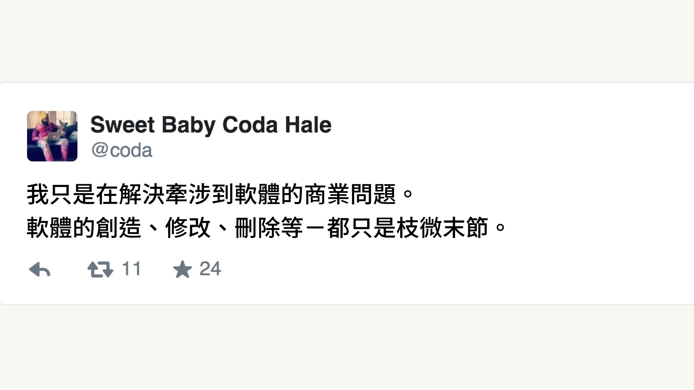 | 拉回來一點，你的工作像是我的朋友 Coda 說的，應該是用技術解決商業問題。 # |
| 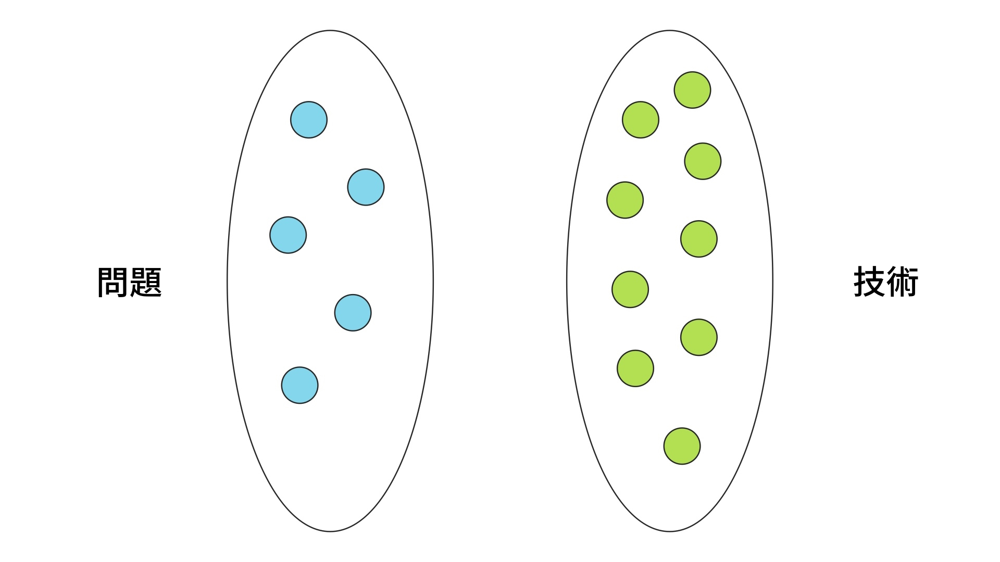 |
我們的領域跟電腦科學有點關係，可以假裝我們是電腦科學家一下，用二分圖來描述這種情況。
左邊是商業問題，右邊是技術方案。 # |
| 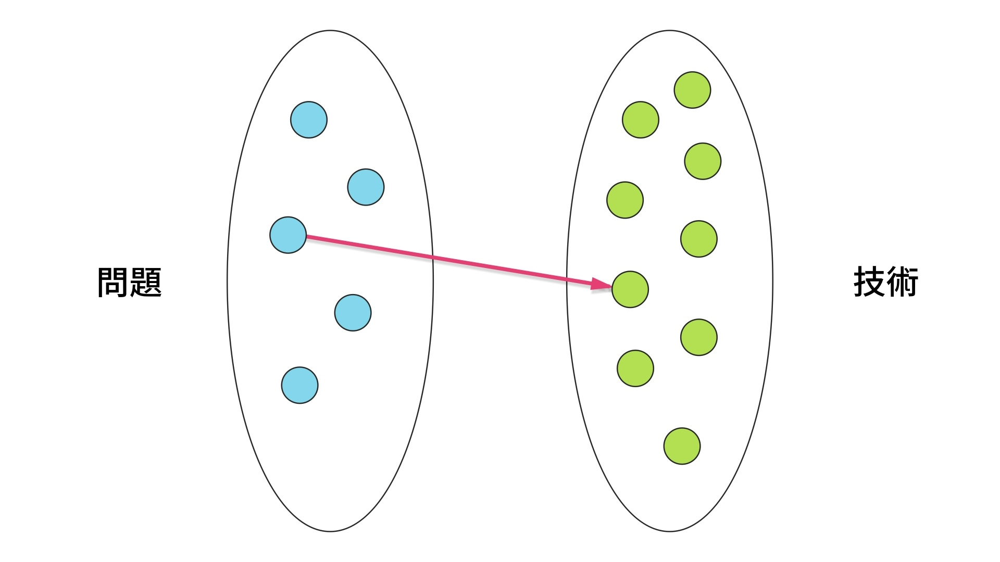 | 我們要試著把左邊的點都連到右邊某點，代表我們的商業問題都解決了。加上一條邊就代表是一個技術的抉擇。 # |
| 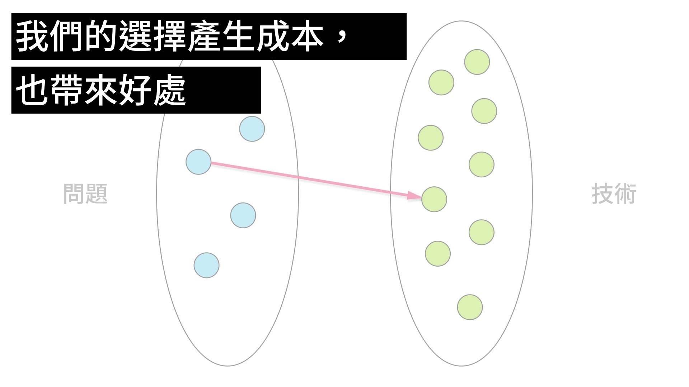 | 每個選擇都有維護成本，但我們也會受益於我們所選的技術。我們解決問題，然後有能力解決更多問題，大致這樣。 # |
| 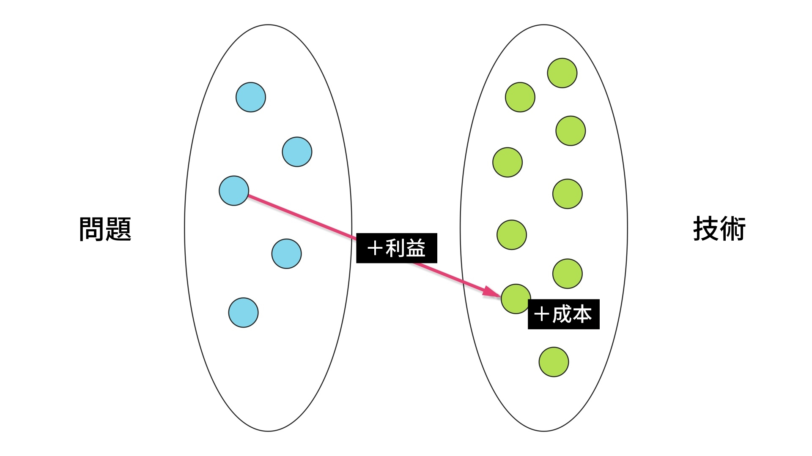 | 所以我們每個選擇都有好處也有成本。 # |
| 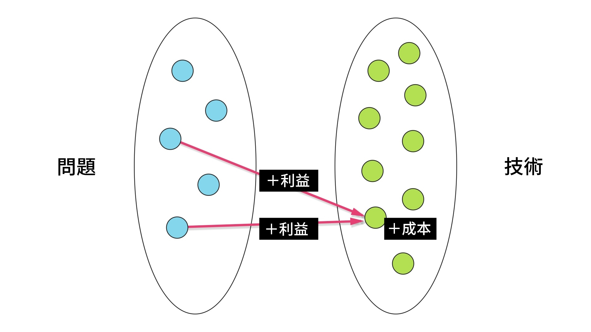 | 當我們要加額外的邊時，我們可以選擇用已經支付了成本的技術… # |

|
或是我們可以選別的技術。得支付新技術相應的成本，但也許得到的開發速率提升或是什麼腦內啡是值得的。 # |
| 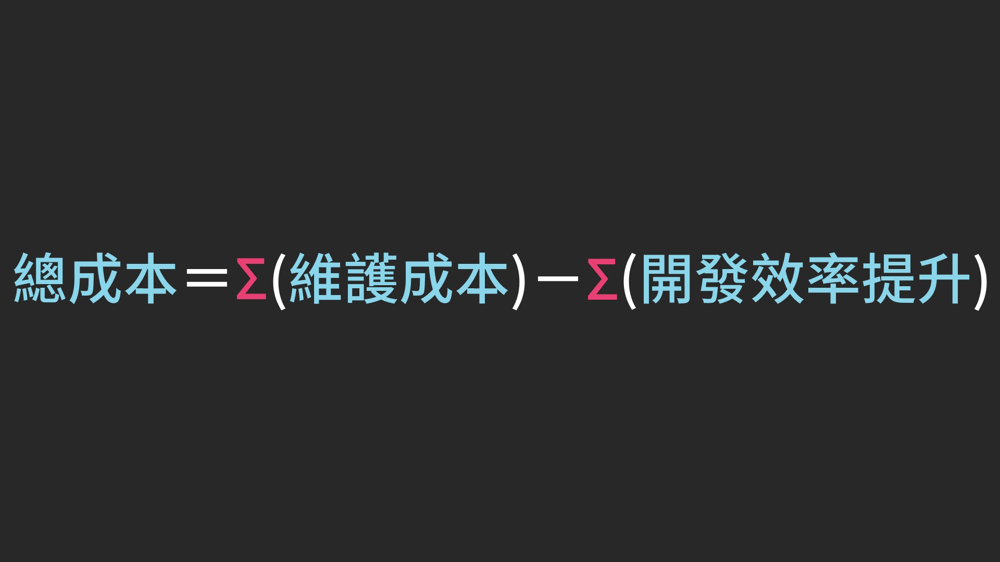 | 我們在嘗試儘量縮減開發成本。總營運成本是你所有選擇的技術的維護成本加總，減去開發速率諸如此類的好處。 # |
| 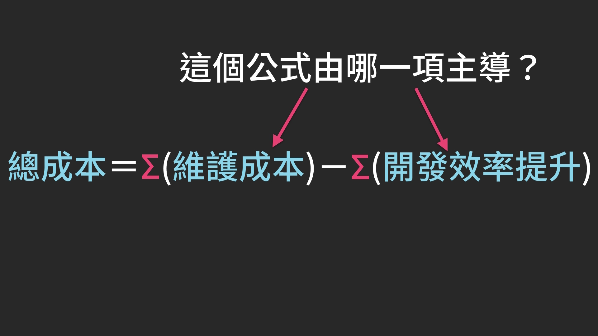 |
我們的行為跟你相信公式裡哪個變數在現實中比較大有關。
如果技術操作成本高，就是成本主導。如果技術真的大幅改善了你的工作效率，那就是效益主導。 # |
| 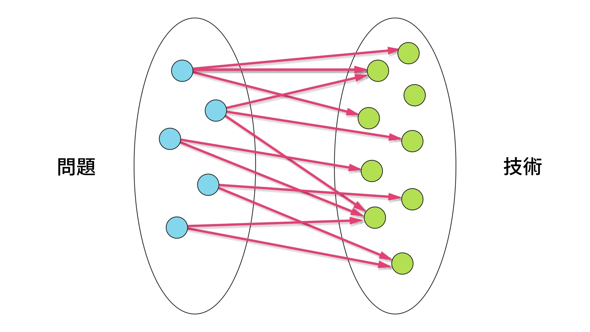 | 根據情況，你可能選擇這樣的配置。我們為了解決所有問題挑選了許多不同的技術。 # |
| 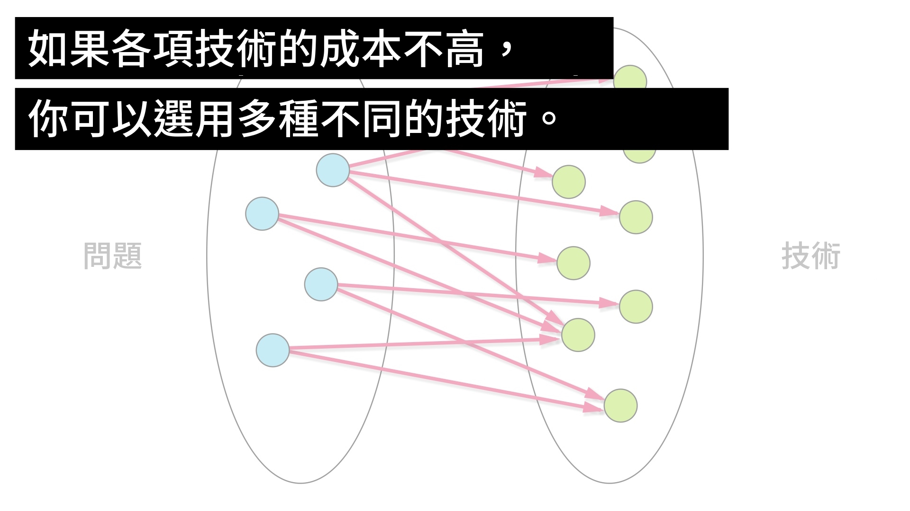 | 如果額外的技術本身成本不高，這樣做是完全合理的。 # |
| 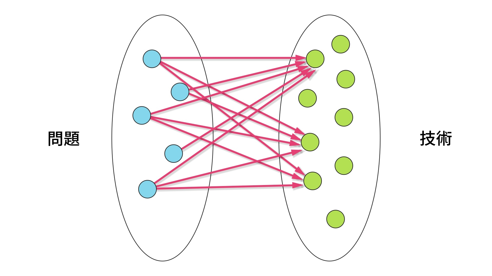 | 這是另一種做法。我們只選少量的技術來涵蓋我們的問題領域、解決所有問題。 # |
| 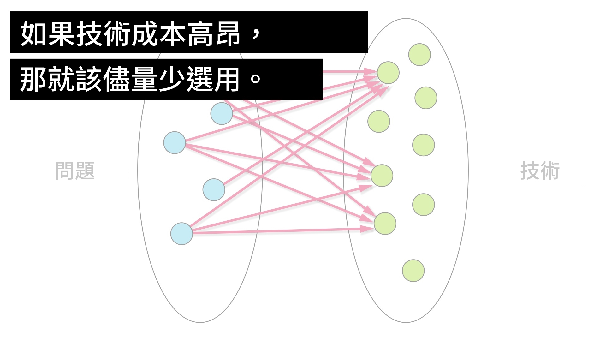 | 當加入技術帶來的包袱很大的時候，這是我們該採取的策略。 # |
| 現實中，新的技術都會伴隨著巨大的包袱。 # | |
| 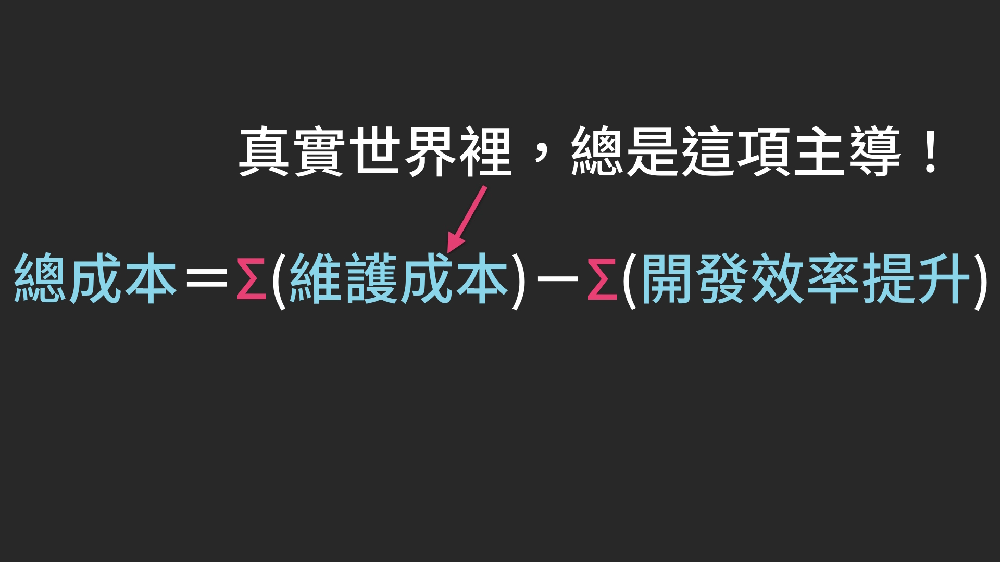 | 這就是現實，持續地操作某項新技術的成本總是會超過用新東西帶來的方便。 # |

|
通常這樣才是對的。我們應該用最小的技術集合來涵蓋我們的問題領域，把工作完成。 # |
| 因為要達到以專業水準操作某項技術實際上很難。很多技術起個頭容易，但是要做到出色很困難。 # | |

|
加入新技術簡單，跟它長久相處下去很難。這些都是你要考慮的事。
我能現在一邊演講一邊用 Homebrew 裝個資料庫，然後寫些資料進去。我做得到，但是不要逼我去做。這跟在 Production 環境下專業地操作是完全兩回事。 # |
|
因此 Polyglot persistence（使用不同資料庫儲存不同資料）不是我們該尋求的自由，我真心希望 Martin Fowler 把他那篇該死的 Polyglot persistence 文章下架。
如果你讓個別團隊、或是個人自由地做局部的 Infrastructure 決策，以全局來看你是在傷害自己。 這是種自由沒錯，你等於是把腳鍊跟扣鎖交給開發者們，說你們可以自由地把自己綁在營運的痛苦上。直到專案終止。 # |
|
| 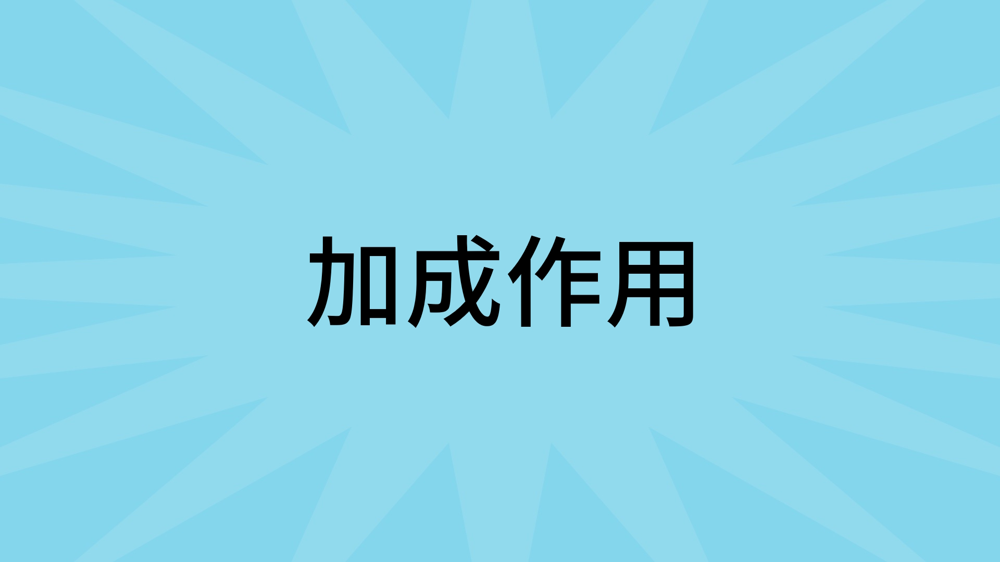 | 除了避免重工跟過多的操作成本，更糟的是因為 Polyglot persistence，你捨棄掉了所有人都在相同平台上才會出現的好處。 # |
| 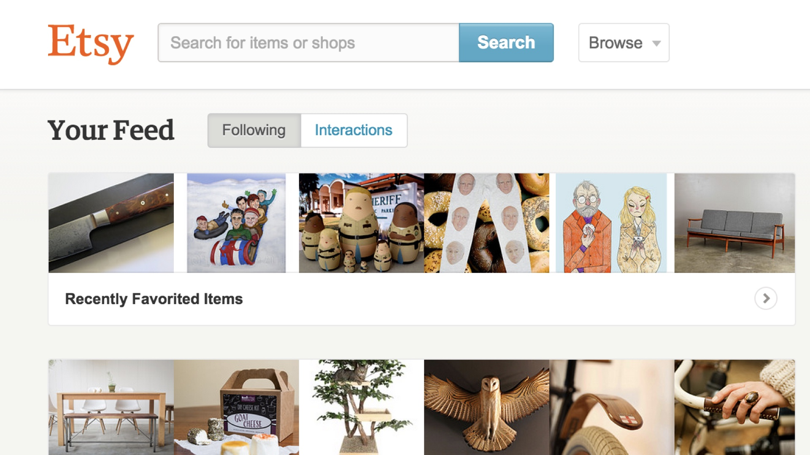 |
從我的過往找到的好例子是 Etsy 的 Activity feeds。
Twitter 是／曾是一個 Activity feeds，Facebook 的動態消息也是。Etsy 許多年來都在花 VC 的資金，我猜碰巧他們也想要一個像 Twitter 還是 Facebook 的 Activity feeds。 我跟一個小團隊在 2010 開發了這個東西，過程還蠻有趣的。 # |
| 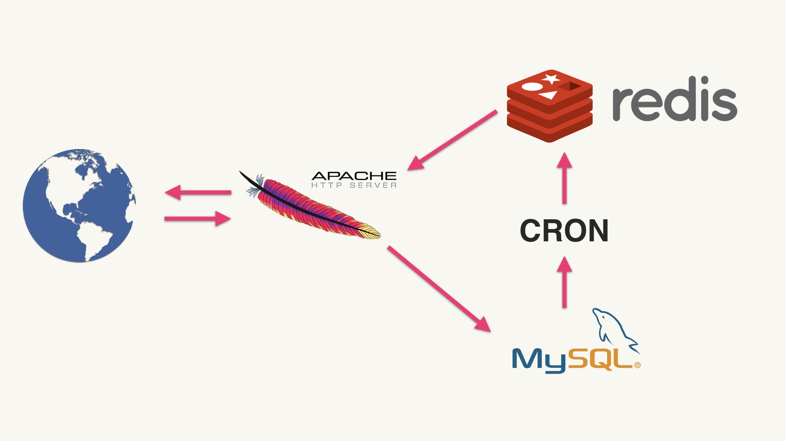 | 如果你嘗試建構 Activity feeds，合理的做法是：你從外在世界收到事件，把它們寫進資料庫。然後有些離線的程序會聚合（Aggregate）這些資料，再撒上一些機械學習魔法，將生成的 Activity feeds 放進 Redis 之類的東西送給前端。這樣就會動起來。 # |
| 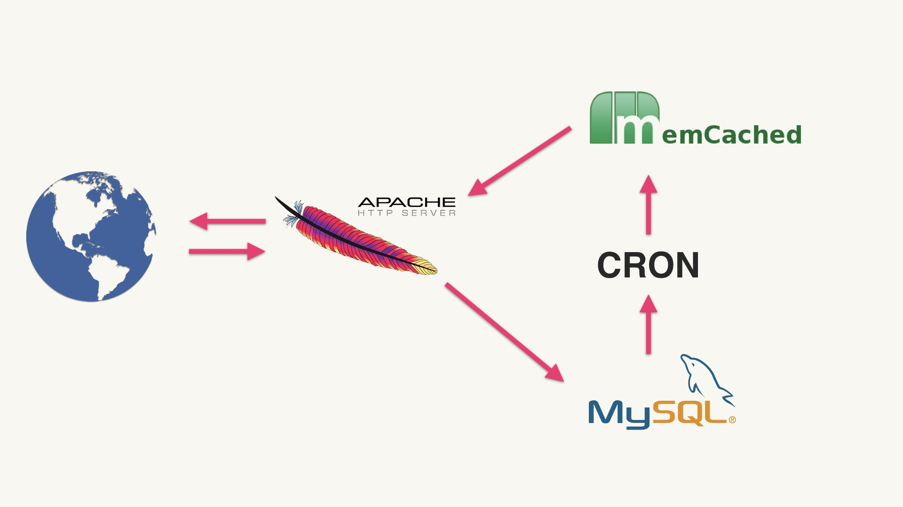 | 但我們要開發 Activity feeds 時，沒有 Redis 只有 Memcached。它們 API 都有點像是塞一坨 Blob 跟取出一坨 Blob，但它們做的保證相當不同。對我們最重要的差異在 Redis 有持久性（Persistent），而 Memcached 沒有持久性。 # |
| 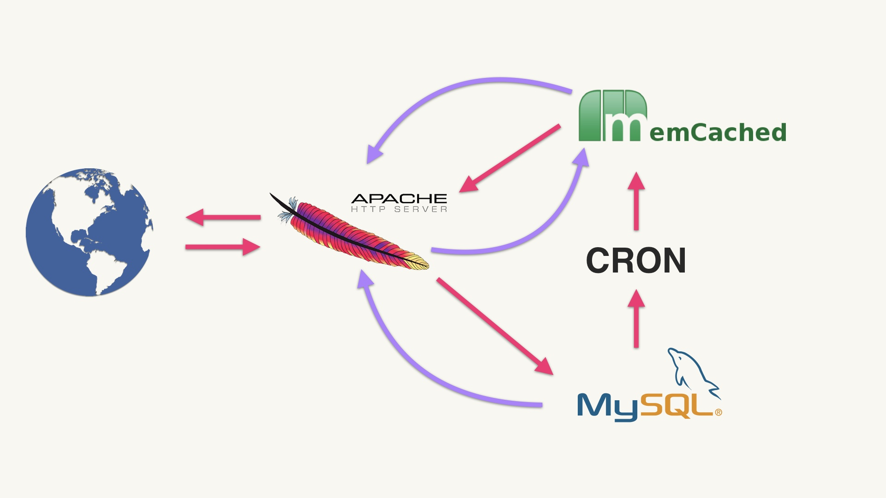 |
實際上的問題在你想要用 Memcached 建構 Activity feeds，你有很多額外的工作要做。你得處理 Memcached 丟掉你想當下想要的資料的問題。
要這樣完成這個功能需要一堆額外的工作。但是我們衡量持續維護新資料庫的成本過後，決定牙一咬用 Memcached 建構這個功能。 # |
| 然後我們就去做別的事了，好幾年沒再碰過這個 Activity feeds。甚至連想都很少想到它。 # | |
| 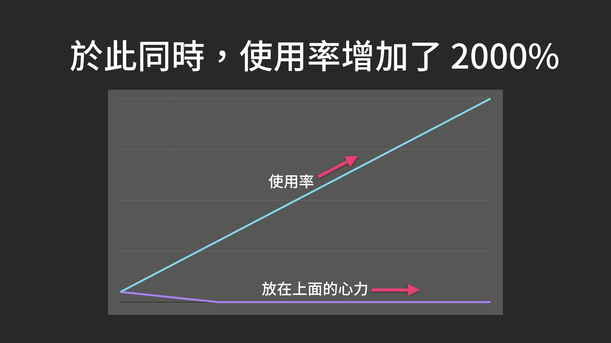 |
有天我想說：「嘿，我有點好奇 Activity feeds 現在怎樣了？」驚訝地發現從發佈到當時，使用率提高了二十倍。而且以我的認知，它運作起來完全正常。
我覺得多了 2000% 的人在用 Activity feeds，然後我們根本沒有發現到，是我職涯中最大的技術成就。 # |
| 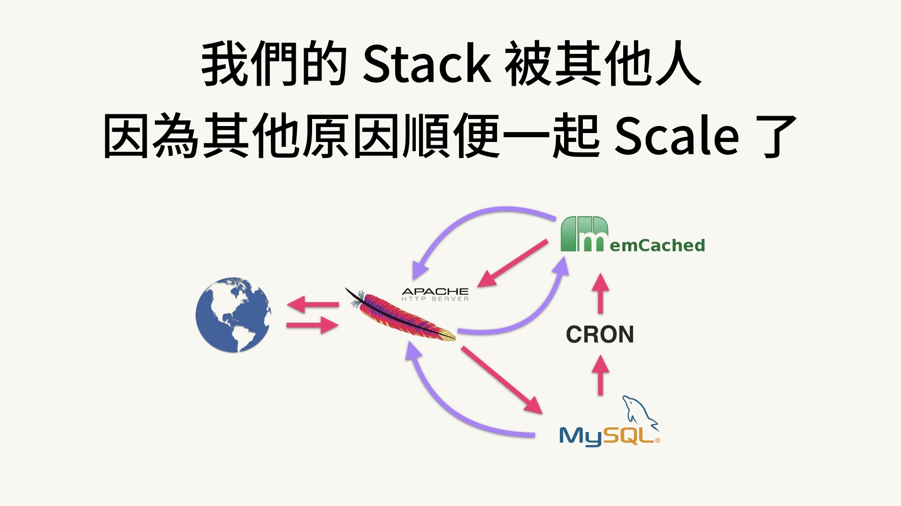 | 原因是因為我們用了共同的 Stack。有些負責處理 MySQL 跟 corn 機器的同事注意到我們需要更多資源，然後有人去資料中心接上更多台電腦。因為網站是全面地成長，所以它們做的是水平擴充（Horizontal scaling）。過程中沒有人注意到我們那個沒沒無聞的功能。 # |
| 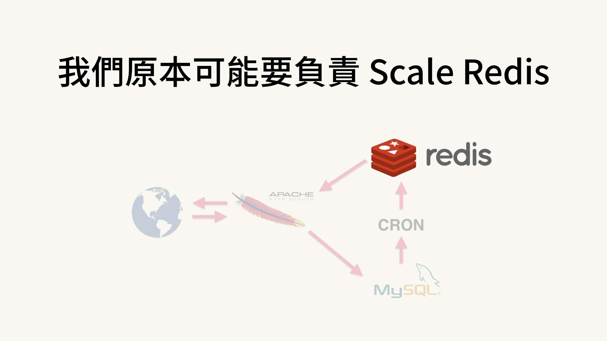 | 如果我們只為了 Activity feeds 部屬 Redis，你可以想見某個時間點當需求成長二十倍時 Redis 會出大事。我們得要放下手邊工作回去自己處理 Redis 讓 Activity feeds 回復正常。 # |
| 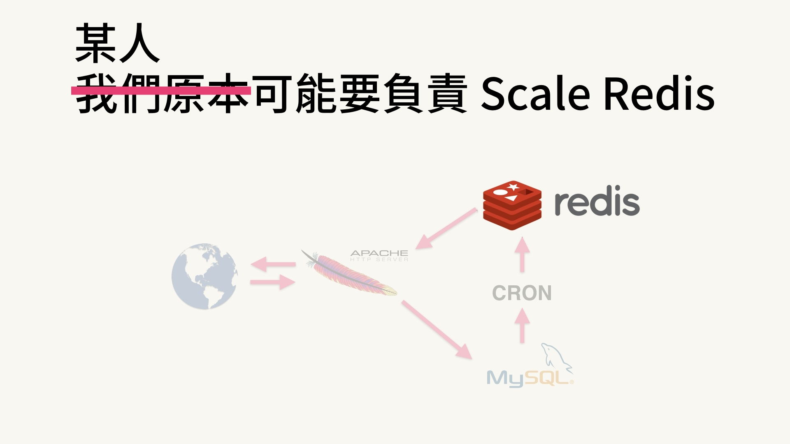 |
更可能的是，某個倒楣鬼要替我們做。我們的團隊一年後就解散了，各奔東西。
我知道大家寧可擦自己的屁股，也不想幫我擦我的屁股。所以如果真的發生 Redis 的問題的話會讓大家感到有點尷尬。 # |
| 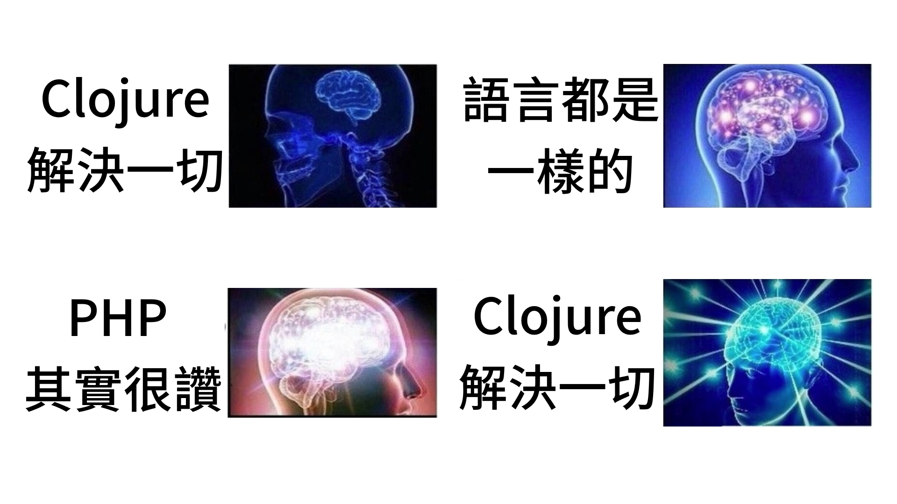 |
我提這個故事是想說你應該偏好成熟的東西，然後盡量不要用太多東西。
但這不是一個絕對的原則。顯然有時加新技術到你的 Stack 是合理的，甚至有時用又新又怪的東西也可能是合理的。 # |
| 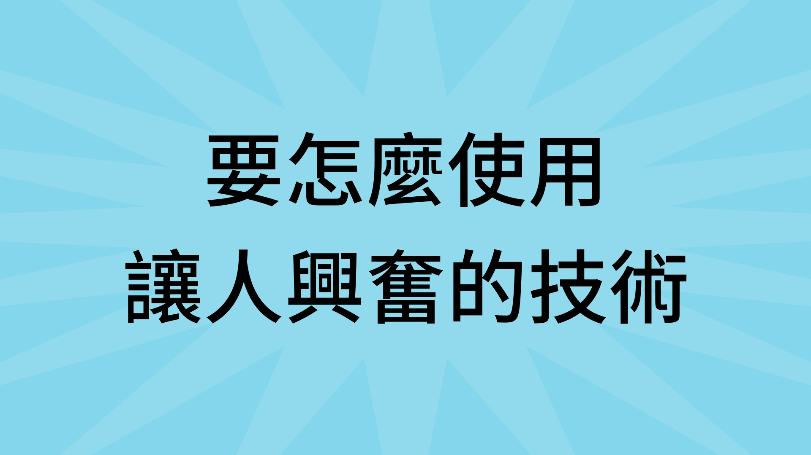 | 所以我想談一下遇到這種狀況該怎麼下手。 # |
|
總而言之還是回到溝通
技術對你的公司有著全面的影響，這不是該讓個別工程師決定的事。你要用溝通找出加入新技術的方法。 你可能覺得這個答案蠻老調重彈的，但相信我，很多組織都還是做不到這一點。 # |
|
|
假設你成功地透過溝通將一款新技術拉回到要先討論再看要不要加入。
第一個好問題是：「如果我們要解決這個問題而不用新技術要怎麼做？」 # |
|
| 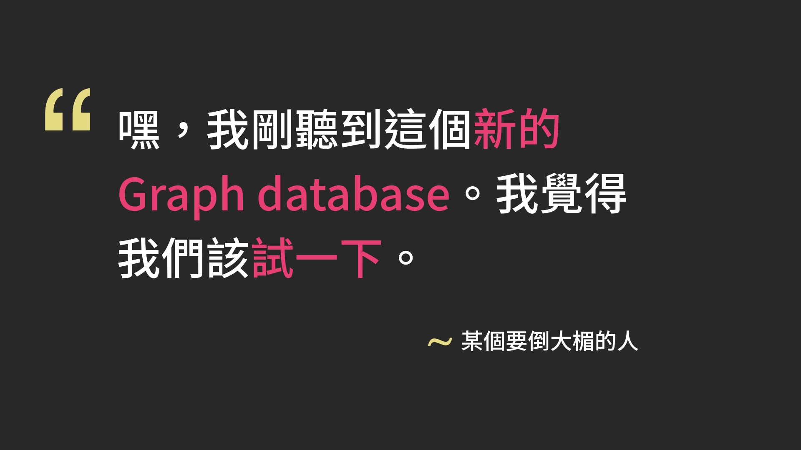 | 這是個好問題，因為我們能立刻抓到想要用新技術槌子解決問題釘子的情境。像是：「呃，問題在我們沒有 Cassandra，也許我們該用。」這種回答。如果你發現這種情況，討論大致上就可以打住了。 # |

|
假設你遇到一個很難的問題，問題鮮少是你做不到。如果你有個已經在 Production 環境的複雜服務，然後你覺得某個特定問題非得引入新技術，我覺得問題可能是你想得不夠用力。
你可能要在舊環境上做些不太自然的事，但是你其實能在最小的 Stack 上走很遠很久。 # |
| 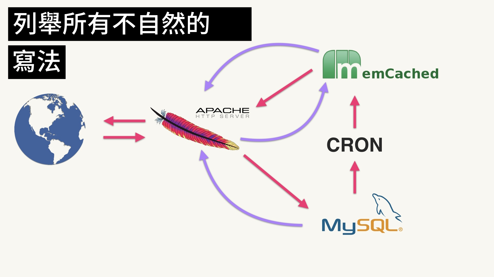 |
列下用既有技術在舊環境上要做什麼不自然的事以達成目標會很有幫助。很多時候你條列了，會發現事情其實沒有那麼糟。或者是跟維護新東西比起來還是比較好。
也有可能真的是採用新技術比較好，這樣你也有證實這個結論的參考。 # |
| 如果你要採用新技術，應該要盡量用低風險的方式開始。你的策略不該是一步登天地把整個應用一次改寫完。你應該在 Production 環境用最低風險的方式證實其價值，然後漸漸取得大家的信心。 # | |
|
如果你要加入的是會造成冗餘的技術，你的最終目標該是替換到沒有冗餘，不應該同時操作兩個相互冗餘的技術下去。
當你加入一個東西取代原有的東西，你應該堅持把舊東西徹底拿掉。這也許會是個長遠的計畫。如果新的工具最終證實沒有用，那也要把所有新的程式用舊的工具重寫。 # |
|
| 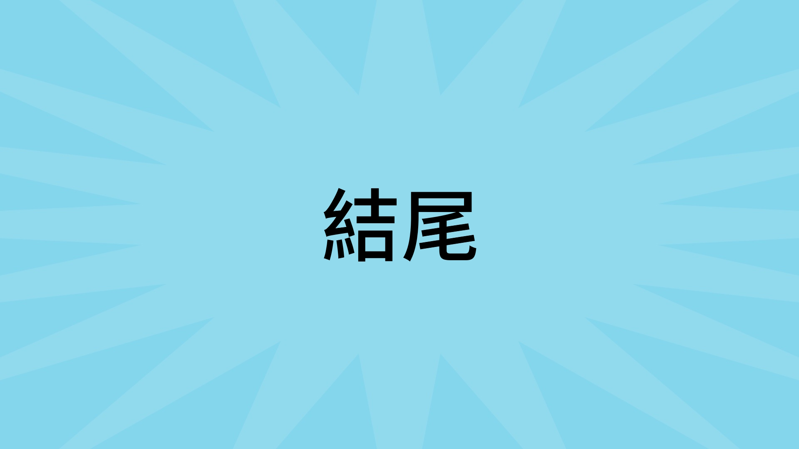 | 現在來做個收尾。 # |
| 你該使用已經被實證的技術。用被充分了解，包括失效模式（Failure mode）也都被探索過的技術。 # | |
| 優先考慮使用讓你能專注在真正問題的東西。 # | |
|
以大局來思考技術選擇，解決整個問題領域的工具越少越好。
有趣的是，你選出來的工具可能都不是對個別問題「最適合」的選擇。但還是有可能是對所有問題來說正確的「一組」選擇。 # |
|

|
徹底掌握你所選擇的工具很重要。 # |
| 我注意到所有工具都遵循以下的法則：當你剛開始用，你覺得糟透了，因為你看到一堆問題。 # | |
|
如果你天真地把新東西放進 Production 環境，親身經歷過這個法則，然後決定下個功能該用不同的東西來寫。
這樣下去你有一天從惡夢中驚醒，會發現你的 Production 環境有九個警報系統。 新東西不會更好，只是你還沒有熟悉它所有糟糕的地方而已。 # |
|
|
如果你這樣下去就會錯過曲線上我們稱之為「精通」的部分，是這張曲線圖靠右的狀態。雖然還是有些問題，用起來感覺依然糟但還在可控範圍內。
軟體工程的殘酷悖論是你可能該用你最討厭的工具。因為你會恨它是來自於你最了解它。 # |
|
| 當要加新技術到 Stack 時，應該要有個與人溝通的流程。 # | |
| 你應該嘗試爬到馬斯洛需求層次上面，煩惱整體大方向。不應該工作時天天在戰該用哪個資料庫。如果你真的天天在戰，試著想想是不是有什麼地方已經走偏了。 # | |
| 快樂來自於推出產品、功能。 # | |
| # |